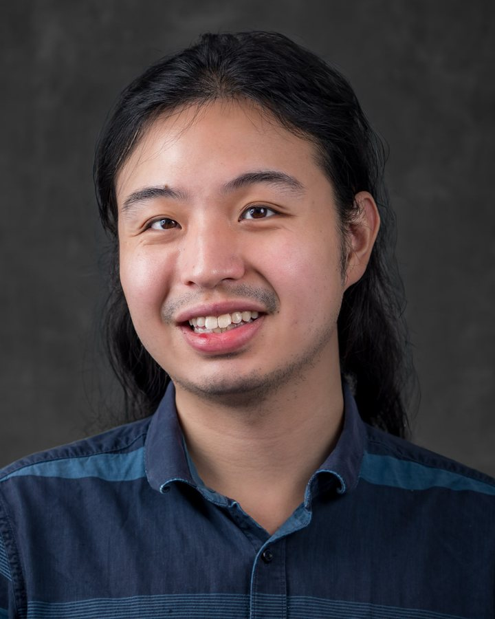
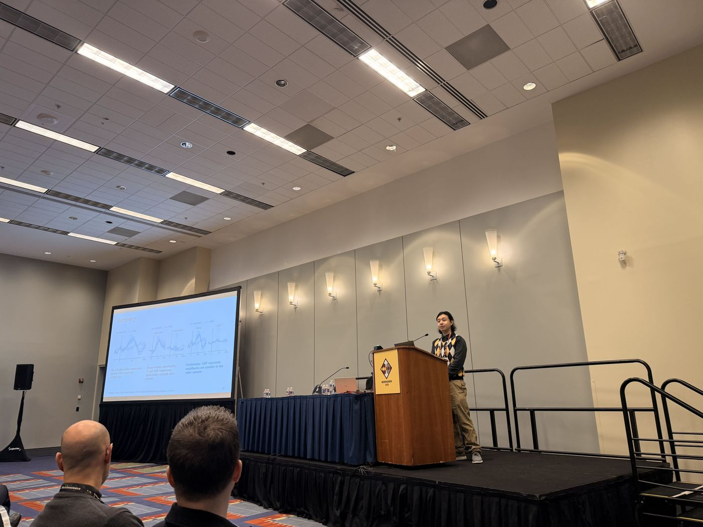

JournalSci. Transl. Med. 2026
Closed-loop auditory stimulation in phase with slow waves during sleep enhances cerebrospinal fluid flow in humans
J. Levitt, X. Zeng, Z. Yang, L. P. L. Jacob, L. D. Lewis
 Aaron Zeng
Aaron Zeng
I'm Xiangjian (Aaron) Zeng. I build closed-loop auditory stimulation systems that use real-time EEG and machine-learning phase prediction, and I study brain physiology with computational modeling. Before MIT, I did research at Pitt, CMU, and UC San Diego.

Featured paper · Sep 2026
Science Translational Medicine
Closed-loop auditory stimulation in phase with slow waves during sleep enhances cerebrospinal fluid flow in humans
Levitt, Zeng, Yang, Jacob, Lewis

Latest talk · Nov 18, 2026
Neuroscience 2026 · NANO42.07 · Washington, DC
Education
News
Research interests
Currently making
Weekly fabrication projects from MIT's HTMAA.
Closed-loop auditory stimulation in phase with slow waves during sleep enhances cerebrospinal fluid flow in humans
J. Levitt, X. Zeng, Z. Yang, L. P. L. Jacob, L. D. Lewis
Modulating Cerebrospinal Fluid Pulsatility during Sleep with Closed-Loop Auditory Stimulation in Young and Older Adults
X. Zeng, J. Levitt, L. D. Lewis
Auditory Stimulation During Sleep Modulates CSF Flow via Dual Slow-Wave and High Frequency Pathways
X. Zeng, J. Levitt, L. D. Lewis
Contributions and synaptic basis of diverse cortical neuron response to flexible task performance
X. Zeng, G. Yu, B. F. Albana, M. N. Insanally
Open to research collaborations and academic discussions.